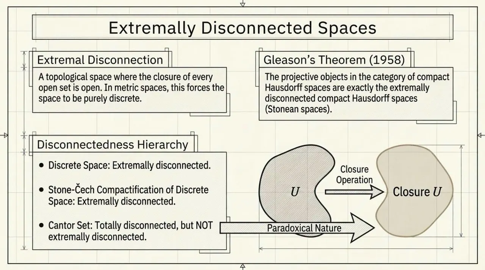
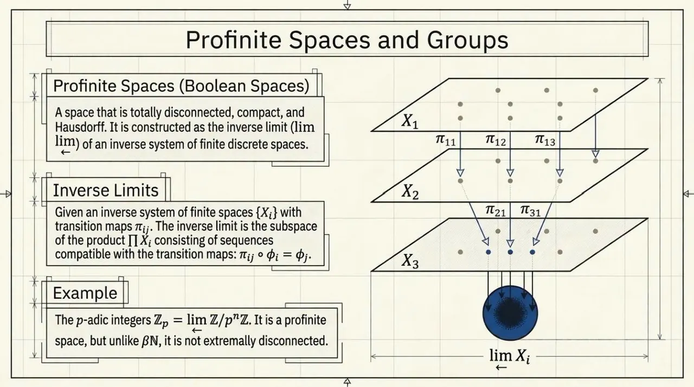

기둥 3 · 끝에서 보는 법 · 14장
아주 끊긴 공간과 프로유한 — 먼지 같은 공간들
캔터 집합, 역극한, 그리고 왼쪽으로 끝없는 2진 정수
캔터 집합, 역극한, 그리고 왼쪽으로 끝없는 2진 정수
핵심 질문 — 완전히 끊겨 있는데도 콤팩트한 「먼지 같은 공간」은 어떻게 생겼고, 어떻게 만들까?
03장의 이산 공간은 완전히 끊겨 있지만 (무한하면) 콤팩트가 아니었어요. 13장의 βℕ는 끊긴 채로 콤팩트해졌죠. 이번 장에서는 이런 「콤팩트한 먼지」를 두 등급으로 나눠요. 닫힘이 늘 열려 있는 아주 끊긴 공간, 그리고 유한 집합을 끝없이 쌓아 만드는 프로유한 공간이에요.
숫자 요약은 이 장의 예시 계산에서 나온 값입니다(실제 데이터가 아닌 설명용 값).
오늘 발표는 제가 먼저예요! 「먼지 같은 공간」 두 가지를 소개할게요.
…나는 −1이 1111…이라는 걸 보여 줄게.
행렬·벡터, 복잡한 공식을 몰라도 됩니다. 그림을 움직여 보고, 밑줄 친 말을 누르면 뜻이 나옵니다.
이 페이지 사용법: 밑줄 친 말을 누르면 뜻이 나옵니다(Esc로 닫기). 단계마다 그림을 직접 움직여 보고, 끝의 확인 퀴즈로 점검하세요. 앞 장: 13 무한 끝의 점 — 울트라필터와 스톤-체흐
하루와 X3가 짝을 이뤄 발표하고(하루: 끊긴 공간, X3: 2진 정수), 나머지 수강생과 조교가 질문해요. 질문 하나에 답 하나씩, 계산으로 확인합니다.
질문 미리 하나: 캔터 집합은 완전히 끊겼는데, 왜 「아주」 끊긴 건 아니야?
그 질문, 제 발표 첫 장에서 답할게요!
「완전히 끊김」(03장)보다 더 강한 「아주 끊김」이 있고, 둘의 차이를 보여 주는 대표 예가 캔터 집합과 βℕ예요.
역극한은 「유한한 것의 끝없는 모음」으로 무한한 대상을 만드는 기술이에요. 14장 이후 수학 곳곳에 나와요.
2의 보수(−1 = 1111…1)는 2진 정수를 유한 자리에서 자른 것이에요.
「캔터」는 이 시리즈에서 「Cantor」를 읽은 이름이에요. 끝없이 가운데를 잘라 낸 먼지 같은 집합입니다.
상황 질문 — 리본의 가운데 1/3을 잘라 내고, 남은 두 조각의 가운데도 또 잘라 내기를 끝없이 하면 무엇이 남을까요? 그 남은 「먼지」는 얼마나 끊겨 있을까요?
U의 닫힘이 「열려 있지 않다」는 걸 어떻게 확인해요?
학교 수학으로 보면: 01장의 「여유」 개념이에요. 닫힘에 새로 들어온 점(여기서는 0) 둘레에 「닫힘 안에만 있는 작은 여유」가 있는지 보면 돼요.
| 식 조각 | 읽는 법 | 뜻 |
|---|---|---|
| C | 캔터 집합 | [0,1]에서 가운데 1/3 잘라 내기를 끝없이 한 나머지 |
| [2/3ᵏ⁺¹, 1/3ᵏ] | 0으로 다가가는 캔터 집합의 조각들 | |
| U = 홀수 k 조각들 | 조각을 하나씩 건너뛰며 고른 열린 집합 | |
| cl(U) = U ∪ {0} | U의 닫힘 — 0이 새로 들어옴 |
k = 1: [2/9, 1/3], k = 2: [2/27, 1/9], k = 3: [2/81, 1/27], …
홀수 k 조각만 고른 것이 U (각 조각은 열리면서 닫힘 → U는 열림)
U의 조각들이 0으로 다가가니 닫힘에는 0이 들어옴
0 둘레 아무리 작은 여유에도 짝수 k 조각(U 밖)이 있음 → cl(U)는 0에서 여유가 없음 → 열려 있지 않음
하나씩 건너뛰어 골랐더니 0에서 틈이 생겼네요. 그래서 캔터 집합은 「아주」 끊긴 건 아니구나.
가운데를 끝없이 잘라 낸 리본은 먼지처럼 흩어져 있지만, 그 먼지들은 0 같은 점 근처로 빽빽하게 몰려 있어요. 몰린 곳에서 「고른 먼지」와 「안 고른 먼지」가 뒤섞여요.
캔터 집합은 완전히 끊겨 있고 콤팩트하지만(프로유한), 아주 끊긴 공간이 아니에요. 반면 이산 공간과 βℕ는 아주 끊긴 공간이에요. 거리로 재는 공간(메트릭 공간)이 아주 끊겨 있으면 이산 공간이 돼요.
「한 조각씩 건너 고르기」를 켜고, 0 근처를 확대해 보세요!
확대하면 초록 조각이 더 많이 보이니까, 결국 다 채워지겠죠!
확대해도 흰 조각이 사이사이 계속 나와. 그게 0에서 여유가 없는 이유야.
원자료 「Extremally Disconnected Spaces」: 정의, 메트릭 공간이면 이산, 끊김의 등급(이산 · βℕ · 캔터 집합), 글리슨 정리(1958).

글리슨 정리(1958): 콤팩트 하우스도르프 공간의 범주에서 사영 대상(어떤 전사 위로도 사상을 들어 올릴 수 있는 대상)은 정확히 아주 끊긴 콤팩트 하우스도르프 공간(스톤 공간)이다. 이산 공간 X에 대해 βX는 이런 사영 대상이다.
상황 질문 — 2로 나눈 나머지, 4로 나눈 나머지, 8로 나눈 나머지를 알려 주는 시계가 여러 개 있다면, 서로 모순 없는 눈금은 어떻게 정해야 할까요?
「맞물린다」는 걸 식으로 쓰면 π_{ij} ∘ φ_i = φ_j 라는데, 너무 어려워요.
학교 수학으로 보면: 초등학교 나머지예요. 8로 나눈 나머지를 다시 4로 나누면 4로 나눈 나머지와 같아야 한다 — 이게 전부예요.
| 식 조각 | 읽는 법 | 뜻 |
|---|---|---|
| X_k = ℤ/2ᵏ | 2ᵏ으로 나눈 나머지 모음 (k층) | |
| π: X_{k+1} → X_k | 아래층 나머지를 위층 크기로 다시 나누기 | |
| (r₁, r₂, r₃, …) | 모든 층이 맞물린 나머지 줄 = 역극한의 점 하나 |
÷2: 1, ÷4: 3, ÷8: 3, ÷16: 11
3을 2로 나누면 1 ✓, 3을 4로 나누면 3 ✓, 11을 8로 나누면 3 ✓ → 맞물림
÷8을 7로 바꾸면 7 ÷ 4 = 나머지 3 ✓, 그런데 11 ÷ 8 = 3 ≠ 7 ✗
이 줄은 정수 11 = 1011₂의 끝부분과 같아요
아래층을 다시 나눠서 위층이 나오면 맞물린 거네요. 이건 손으로 할 수 있어요!
「2로 나눈 나머지 시계」, 「4로 나눈 나머지 시계」, 「8로 나눈 나머지 시계」를 함께 쓰려면, 큰 시계의 눈금을 다시 나눴을 때 작은 시계 눈금이 나와야 해요.
유한한 층들과 층 사이 지도의 모음을 역계(층층이 쌓은 나머지 시계), 모든 층에서 맞물린 줄들의 모음을 역극한이라 해요. 이렇게 만든 공간은 콤팩트하고, 점끼리 떼어 놓을 수 있고, 완전히 끊겨 있어요 — 이것이 프로유한 공간이에요.
…나머지 네 개를 맞물리게 맞춰 봐.
그냥 다 같은 숫자 3으로 하면 맞물리겠죠!
3을 2로 나누면 1이야. 위층이 3이면 2층짜리 시계엔 3이 없어.
원자료 「Profinite Spaces and Groups」: 프로유한(불) 공간의 정의와 역극한, 오른쪽 그림 X₁ → X₂ → X₃ → lim X_i.

상황 질문 — 컴퓨터에서 −1을 8자리 이진수로 저장하면 11111111이에요. 자리를 끝없이 늘리면 −1은 어떤 「수」가 될까요?
…1111에 1을 더하면 정말 0이 돼요?
학교 수학으로 보면: 초등학교 받아올림 덧셈이에요. 1 + 1 = 10(이진수)이라 받아올림이 왼쪽으로 계속 밀려가요. 자리가 끝없으면 받아올림이 끝나지 않고, 남는 자리는 모두 0이에요.
| 식 조각 | 읽는 법 | 뜻 |
|---|---|---|
| ℤ₂ | 2진 정수 | 2ᵏ으로 나눈 나머지 줄들의 역극한 |
| −1 mod 2ᵏ = 2ᵏ − 1 | −1을 2ᵏ으로 나눈 나머지 (1, 3, 7, 15, …) | |
| …1111 | −1의 2진 표기 (모든 자리가 1) |
−1 ÷ 2 → 나머지 1, ÷ 4 → 3, ÷ 8 → 7, ÷ 16 → 15
3 ÷ 2 = 나머지 1 ✓, 7 ÷ 4 = 3 ✓, 15 ÷ 8 = 7 ✓ → 맞물림
이진수: 1, 11, 111, 1111 → …1111
…1111 + 1: 오른쪽부터 1 + 1 = 0 받아올림 1, 계속 → …0000 = 0 ✓
컴퓨터가 −1을 1111…로 쓰는 게 그냥 약속인 줄 알았는데, 이런 수학이 있었구나!
컴퓨터는 −1을 8자리면 11111111, 16자리면 1111111111111111로 저장해요(2의 보수). 자리를 늘려도 모두 1이에요. 끝없이 늘린 것이 2진 정수의 −1이에요.
2진 정수 ℤ₂ = lim← ℤ/2ᵏℤ는 프로유한 공간(그리고 프로유한 군)이에요. 모든 정수가 그 안에 들어가고, −1은 …1111처럼 왼쪽으로 끝없는 2진 숫자예요. ℤ₂는 아주 끊긴 공간은 아니에요(캔터 집합과 같은 모양이에요).
…정수를 −20부터 20까지 바꿔 봐. 음수가 재밌어.
음수는 2진 정수에 없을 거예요. 나머지는 늘 양수니까요!
나머지가 양수인 건 맞아. 그런데 그 나머지 줄이 맞물리는지를 봐.
원자료 「Example」 상자: p진 정수 ℤ_p = lim← ℤ/pⁿℤ는 프로유한 공간이지만 βℕ와 달리 아주 끊긴 공간이 아님.
모아가 AI에게 「프로유한 공간은 모두 아주 끊긴 공간인가요?」라고 물었어요.
비슷한 이름의 두 개념(완전히/아주)을 AI가 「같은 뜻」이라고 하면, 각 정의를 나란히 놓고 반례 하나를 찾아보세요.
−1을 2, 4, 8, …, 256으로 나눈 나머지 줄이 맞물리는지 계산해서, −1이 2진 정수 ℤ₂의 점인지 판정!
「−1도 2진 정수야. …1111로 맞물려.」
「음수는 나머지 줄을 못 만드니까 2진 정수가 아니에요!」
누가 맞을지 먼저 예상해 보고 단추를 누르세요. 판정은 계산 결과로만 합니다.
개념정리 흐름: 아주 끊긴 공간 → 역극한과 프로유한 공간 → 2진 정수
| 개념 | 한 줄 뜻 | 일상 비유 | 비유의 한계 |
|---|---|---|---|
| 아주 끊긴 공간 | 열린 집합의 닫힘이 늘 열림 | 어떻게 채워도 틈이 남는 먼지 | 거리로 재는 공간이면 이산뿐 — 실제 예(βℕ)는 그림으로 못 그림 |
| 캔터 집합 | 가운데를 끝없이 잘라 낸 먼지 | 잘라 낸 리본 | 완전히 끊겼지만 아주 끊기진 않음 |
| 역극한 / 프로유한 | 맞물린 유한 층들의 끝없는 줄 | 여러 나머지 시계 | 모든 층을 확인해야 함 |
| 2진 정수 | ℤ₂ = lim← ℤ/2ᵏℤ | 컴퓨터의 2의 보수 | 컴퓨터는 유한 자리만 — 2진 정수는 끝없는 자리 |
발표 평가: 하루는 그림, X3는 계산으로 질문에 정확히 답했어요. 기둥 3 완주!
캔터 집합 질문, 제대로 답했죠?
…1111 + 1 = 0. 오늘의 한 줄.
좋아. 다음 시간 종합 쪽지시험은 내가 문제를 냈어.
다음 장 예고: 15장은 종합 기말 쪽지시험과 졸업 발표! 세 기둥을 한 번에 다시 보고, 모두가 문제를 풀어요.